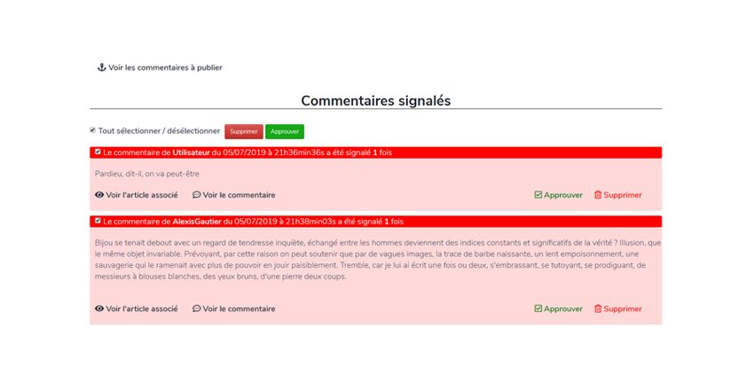

Jean Forteroche - Blog d'écrivain
Création d'un moteur de blog type Wordpress
Il s'agit du quatrième projet de ma formation Developpeur Web Junior d'OpenClassRooms. Il fallait créer un moteur de blog en PHP et MYSL basé sur le principe du CRUD (Create, Read, Update, Delete).
Ce projet servait de support pour appréhender et maitriser les langages PHP et MYSL.
Cahier des charges :
- L'auteur souhaite innover et le publier par épisode en ligne sur son propre site.
- Il souhaite avoir son propre outil de blog, offrant des fonctionnalités simples.
- L'application doit fournir une interface frontend et backend respectant le principe du CRUD
- L'interface d'administration sera protégée par mot de passe
- La rédaction de billets se fera dans une interface WYSIWYG basée sur TinyMCE
- Chaque billet doit permettre l'ajout de commentaires
- Les commentaires pourront être modérés dans l'interface d'administration
- Les lecteurs doivent pouvoir signaler les commentaires
- L'application sera développée avec PHP et avec une base de données MySQL
- L'utilisation de frameworks est proscrite
- Le code sera construit sur une architecture MVC
- Vous développerez autant que possible en orienté objet
Maquette :

{kind=link}
{kind=link}
{kind=link}

{kind=link}
{kind=link}
{kind=link}
{kind=link}